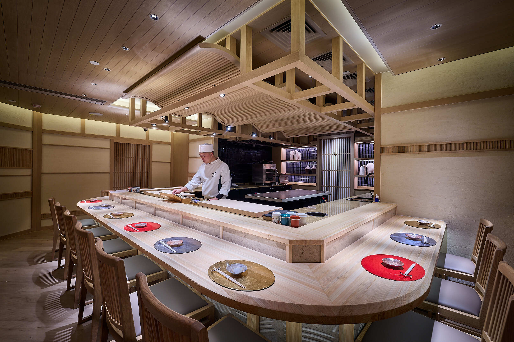
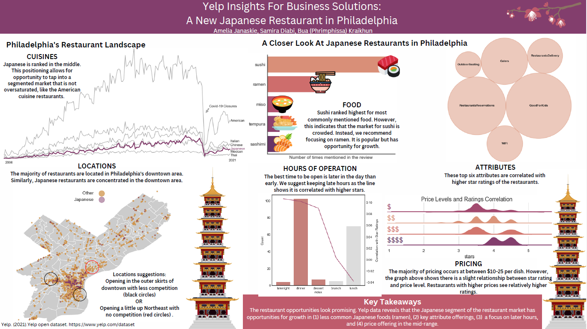

A New Japanese Restaurant in Philadelphia, PA
 Project Description
Our client, Tom, wants to get a better understanding of the restaurant industry in Philadelphia. He plans to open a new Japanese restaurant and wants to know more about the market. In this report, our team provides deeper insight into the Philadelphia restaurant market and specifically looks at Japanese restaurants. We use data from Yelp, implementing robust information from customer reviews, business ratings, and more, to determine the strengths and weaknesses of the market.
Guiding Questions:
1.) What would be a good location for Tom's new Japanese restaurant?
2.) How should the food be priced?
3.) What are the most popular items that Tom can include on the menu?
4.) What are the most common features or attributes of similar restaurants?
3.) What are the most suitable hours of operation?
Our comprehensive analysis provided Tom with actionable recommendations to strengthen his business plan and increase the likelihood of success in opening his new Japanese restaurant in Philadelphia.
Results And Findings
The poster below shows the results of our project. Please, refer to github repository to find codes, datasets, and READMEs. Thank you :).
 Acknowledgments
I'm thankful for the collaboration and support of my peers and mentor, which were crucial to this project's success. Special appreciation goes to my classmates, Amelia Janaskie and Bua (Phrimphissa) Kraikhun, for their dedication and teamwork. Their insights enriched our work, and I'm grateful for their collaboration. I'm also indebted to Professor Gabriela Gongora-Svartzman for her guidance and support throughout.